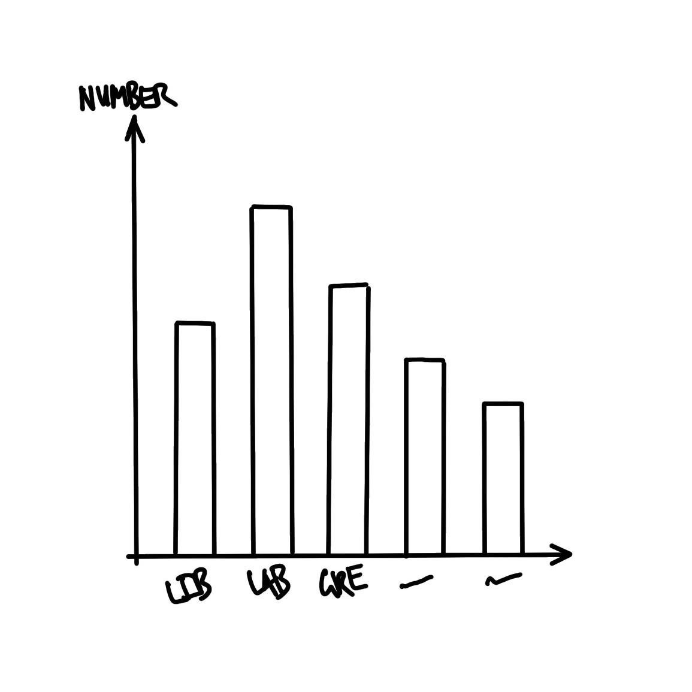

flowchart LR p[[Plan]] sim[[Simulate]] a[[Acquire]] e[[Explore/Understand]] s[[Share]] p --> sim --> a --> e --> s
Data Analysis Workflow – The Firehose
SOCI 3040 – Quantitative Research Methods
John McLevey (he/him)
Sociology, Memorial University
January 14, 2025
1 Drinking From the Firehose
1.1 the firehose
- Australian elections
- Toronto shelters
- Neonatal mortality rates (NMR)
1.2 the firehose
Whenever you’re learning a new tool, for a long time, you’re going to suck\(\dots\) But the good news is that is typical; that’s something that happens to everyone, and it’s only temporary.
Hadley Wickham as quoted by Barrett (2021)
You will be guided thoroughly here. Hopefully by experiencing the excitement of telling stories with data, you will feel empowered to stick with it.
Rohan Alexander (2023)
1.3 import libraries
2 Plan
Australian Elections
2.1 plan
2.1.1 Australian Elections
How many seats did each political party win in the 2022 Australian Federal Election?
Australia is a parliamentary democracy
with 151 seats in the House of Representatives.
Major parties: Liberal and Labour
Minor parties: Nationals and Greens
Many smaller parties and independents
2.2 plan


3 Simulate
Australian Elections
3.1 simulate
3.2 simulate
We’ll simulate a dataset with two variables,
Division and Party, and some values for each.
division
the name of one of the 131 Australian divisions
party
the name of one of the political parties
Liberal, Labor, National, Green, or Other
3.3 simulate
3.4 simulate
ü§ò We have our fake data!
4 Acquire
Australian Elections
4.1 acquire
The data we want is provided by the Australian Electoral Commission (AEC), which is the non-partisan agency that organizes Australian federal elections. We can download the data using this link, but we want to do it programatically, storing the results to a dataframe object called raw_elections_data.
4.2 acquire
We’ll save the data as a CSV file.
✌️ R Tip
The here() function, from the here library, simplifies file paths by always referencing the root directory for a project. This makes code more reproducible and eliminates issues with working directories, especially when you are using more than one machine, collaborating, or sharing code with someone else. Jenny Bryan wrote a brief “Ode to the here package,” “here here,” which you can read… here.
4.3 acquire
ü§ò We have our real data!
# A tibble: 151 × 8
DivisionID DivisionNm StateAb CandidateID GivenNm Surname
<dbl> <chr> <chr> <dbl> <chr> <chr>
1 179 Adelaide SA 36973 Steve GEORGA…
2 197 Aston VIC 36704 Alan TUDGE
3 198 Ballarat VIC 36409 Cather… KING
4 103 Banks NSW 37018 David COLEMAN
5 180 Barker SA 37083 Tony PASIN
6 104 Barton NSW 36820 Linda BURNEY
7 192 Bass TAS 37134 Bridge… ARCHER
8 318 Bean ACT 36231 David SMITH
9 200 Bendigo VIC 36424 Lisa CHESTE…
10 105 Bennelong NSW 36827 Jerome LAXALE
# ℹ 141 more rows
# ℹ 2 more variables: PartyNm <chr>, PartyAb <chr>4.4 acquire
head() shows the first six rows.
# A tibble: 6 × 8
DivisionID DivisionNm StateAb CandidateID GivenNm Surname
<dbl> <chr> <chr> <dbl> <chr> <chr>
1 179 Adelaide SA 36973 Steve GEORGA…
2 197 Aston VIC 36704 Alan TUDGE
3 198 Ballarat VIC 36409 Catheri… KING
4 103 Banks NSW 37018 David COLEMAN
5 180 Barker SA 37083 Tony PASIN
6 104 Barton NSW 36820 Linda BURNEY
# ℹ 2 more variables: PartyNm <chr>, PartyAb <chr>4.5 acquire
tail() shows the last six rows.
# A tibble: 6 × 8
DivisionID DivisionNm StateAb CandidateID GivenNm Surname
<dbl> <chr> <chr> <dbl> <chr> <chr>
1 152 Wentworth NSW 37451 Allegra SPENDER
2 153 Werriwa NSW 36810 Anne Ma… STANLEY
3 150 Whitlam NSW 36811 Stephen JONES
4 178 Wide Bay QLD 37506 Llew O'BRIEN
5 234 Wills VIC 36452 Peter KHALIL
6 316 Wright QLD 37500 Scott BUCHHO…
# ℹ 2 more variables: PartyNm <chr>, PartyAb <chr>4.6 acquire
“We are trying to make it similar to the dataset that we thought we wanted in the planning stage. While it is fine to move away from the plan, this needs to be a deliberate, reasoned decision.” (Alexander 2023)
Let’s clean.
4.7 acquire
clean_names() makes variables easier to type.
Let’s look at the first 6 rows.
# A tibble: 6 × 8
division_id division_nm state_ab candidate_id given_nm
<dbl> <chr> <chr> <dbl> <chr>
1 179 Adelaide SA 36973 Steve
2 197 Aston VIC 36704 Alan
3 198 Ballarat VIC 36409 Catherine
4 103 Banks NSW 37018 David
5 180 Barker SA 37083 Tony
6 104 Barton NSW 36820 Linda
# ℹ 3 more variables: surname <chr>, party_nm <chr>,
# party_ab <chr>4.8 acquire
✌️ R Tip
We can choose certain variables of interest with select() from dplyr, which we loaded as part of the tidyverse. The pipe operator |> pushes the output of one line to be the first input of the function on the next line.
We are primarily interested in two variables:
division_nm (division name)party_nm (party name)
4.9 acquire
# A tibble: 6 × 2
division_nm party_nm
<chr> <chr>
1 Adelaide Australian Labor Party
2 Aston Liberal
3 Ballarat Australian Labor Party
4 Banks Liberal
5 Barker Liberal
6 Barton Australian Labor PartyThis looks good, but some of the variable names are still not obvious because they are abbreviated.
4.10 acquire
✌️ R Tip
We can look at the names of the columns (i.e., variables) in a dataset using names(). We can change them using rename() from dplyr.
Let’s rename.
4.11 acquire
cleaned_elections_data <-
cleaned_elections_data |>
rename(
division = division_nm,
elected_party = party_nm
)
head(cleaned_elections_data)# A tibble: 6 × 2
division elected_party
<chr> <chr>
1 Adelaide Australian Labor Party
2 Aston Liberal
3 Ballarat Australian Labor Party
4 Banks Liberal
5 Barker Liberal
6 Barton Australian Labor Party4.12 acquire
What are the unique values in elected_party?
[1] "Australian Labor Party"
[2] "Liberal"
[3] "Liberal National Party of Queensland"
[4] "The Greens"
[5] "The Nationals"
[6] "Independent"
[7] "Katter's Australian Party (KAP)"
[8] "Centre Alliance" Cool, but let’s simplify the party names in elected_party to match what we simulated. We can do this with case_match() from dplyr.
4.13 acquire
cleaned_elections_data <-
cleaned_elections_data |>
mutate(
elected_party =
case_match(
elected_party,
"Australian Labor Party" ~ "Labor",
"Liberal National Party of Queensland" ~ "Liberal",
"Liberal" ~ "Liberal",
"The Nationals" ~ "Nationals",
"The Greens" ~ "Greens",
"Independent" ~ "Other",
"Katter's Australian Party (KAP)" ~ "Other",
"Centre Alliance" ~ "Other"
)
)4.14 acquire
# A tibble: 6 × 2
division elected_party
<chr> <chr>
1 Adelaide Labor
2 Aston Liberal
3 Ballarat Labor
4 Banks Liberal
5 Barker Liberal
6 Barton Labor Our data now matches our plan! üòé
4.15 acquire
Let’s save the cleaned data so that we can start with it data in the next stage. We’ll use a new filename to preserve the original and make it easy to identify the clean version.
5 Explore / Understand
Australian Elections
5.1 explore / understand
How do we build the graph that we planned?
5.2 explore / understand
First, we read in the cleaned dataset that we just created.
✌️ R Tip
I’m using the filepath object I previously created: aus_elections_clean_path.
This won’t work in a new script unless we re-create the object. Can you explain why?
5.3 explore / understand
# A tibble: 6 × 2
division elected_party
<chr> <chr>
1 Adelaide Labor
2 Aston Liberal
3 Ballarat Labor
4 Banks Liberal
5 Barker Liberal
6 Barton Labor üòé
5.4 explore / understand
How many seats did each party win?
We can get a quick count with count() from dplyr.
5.5 explore / understand
✌️ R Tip
The grammar of graphics is a conceptual framework for constructing data visualizations. It breaks down plots to their most basic elements, like data, scales, geoms (geometric objects), coordinates, and statistical transformations. The idea is to plan and build our vizualizations by layering these basic elements together rather than mindlessly relying on generic chart types.
ggplot2, a data visualization library from the tidyverse, is designed around the grammar of graphics idea. We build data visualizations by layering the desired elements of our plots. For example, we use aes() to specify aesthetic mappings that link our data to visual elements like position, color, size, shape, and transparency. We can create and tweak just about any visualization we want by layering data, aesthetics, and geoms using the add operator, +.
5.6 explore / understand
Let’s visualize the counts as vertical bars using geom_bar() from ggplot2.
But it’s cleaner to use the pipe operator |>.
5.6 explore / understand
5.7 explore / understand
5.7 explore / understand

5.8
cleaned_elections_data |>
ggplot(aes(x = elected_party)) +
geom_bar()
cleaned_elections_data |>
ggplot(aes(x = elected_party)) +
geom_bar() +
theme_minimal() +
labs(x = "Party", y = "Number of seats")
6 Share
Australian Elections
6.1 share
Example taken directly from Alexander (2023), here.
Australia is a parliamentary democracy with 151 seats in the House of Representatives, which is the house from which government is formed. There are two major parties—“Liberal” and “Labor”—two minor parties—“Nationals” and “Greens”—and many smaller parties. The 2022 Federal Election occurred on 21 May, and around 15 million votes were cast. We were interested in the number of seats that were won by each party.
We downloaded the results, on a seat-specific basis, from the Australian Electoral Commission website. We cleaned and tidied the dataset using the statistical programming language R (R Core Team 2023) including the tidyverse (Wickham et al. 2019) and janitor (Firke 2023). We then created a graph of the number of seats that each political party won (Figure 3).
We found that the Labor Party won 77 seats, followed by the Liberal Party with 48 seats. The minor parties won the following number of seats: the Nationals won 10 seats and the Greens won 4 seats. Finally, there were 10 Independents elected as well as candidates from smaller parties.
The distribution of seats is skewed toward the two major parties which could reflect relatively stable preferences on the part of Australian voters, or possibly inertia due to the benefits of already being a major party such a national network or funding. A better understanding of the reasons for this distribution are of interest in future work. While the dataset consists of everyone who voted, it worth noting that in Australia some are systematically excluded from voting, and it is much more difficult for some to vote than others.
6.2 References
Alexander, Rohan. 2023. Telling Stories with Data: With Applications in R. Chapman; Hall/CRC.
Barrett, Malcolm. 2021. Data Science as an Atomic Habit. https://malco.io/articles/2021-01-04-data-science-as-an-atomic-habit.
Bronner, Laura. 2020. “Why Statistics Don’t Capture the Full Extent of the Systemic Bias in Policing.” FiveThirtyEight, June. https://fivethirtyeight.com/features/why-statistics-dont-capture-the-full-extent-of-the-systemic-bias-in-policing/.
Cardoso, Tom. 2020. “Bias behind bars: A Globe investigation finds a prison system stacked against Black and Indigenous inmates.” The Globe and Mail, October. https://www.theglobeandmail.com/canada/article-investigation-racial-bias-in-canadian-prison-risk-assessments/.
Firke, Sam. 2023. janitor: Simple Tools for Examining and Cleaning Dirty Data. https://CRAN.R-project.org/package=janitor.
R Core Team. 2023. R: A Language and Environment for Statistical Computing. Vienna, Austria: R Foundation for Statistical Computing. https://www.R-project.org/.
Wickham, Hadley, Mara Averick, Jenny Bryan, Winston Chang, Lucy D’Agostino McGowan, Romain François, Garrett Grolemund, et al. 2019. “Welcome to the Tidyverse.” Journal of Open Source Software 4 (43): 1686. https://doi.org/10.21105/joss.01686.